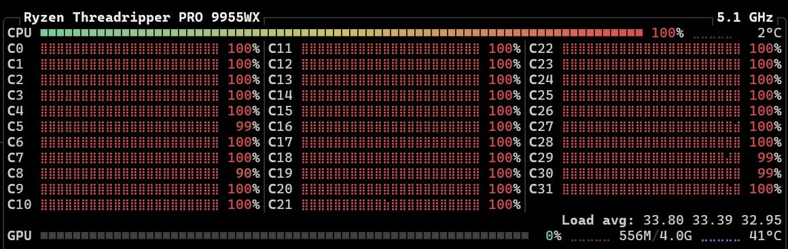

Archive
เท่าไรเท่ากัน
บันทึกสั้นพร้อมภาพหน้าจอที่ระบุ Ryzen Threadripper PRO 9955WX และการใช้งาน CPU 100% กับข้อความ “เท่าไรเท่ากัน”
computer-hardwareparallel-computingscientific-computingresearch-life
Rewritten Post
เท่าไรเท่ากัน


เท่าไรเท่ากัน
Original
Original Facebook Post
เท่าไรเท่ากัน
บทความอื่นที่เกี่ยวข้อง